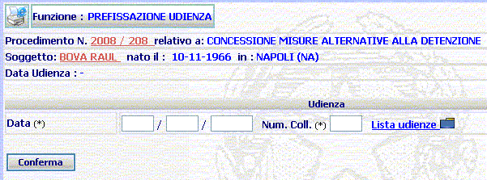

1. selezionare dalla lista predefinita delle udienze
la data di prefissazione udienza.
2. agire sul pulsante
per confermare la data selezionata.
UDIENZA - PREFISSAZIONE UDIENZA: la funzione prescelta consente di inserire una data di prefissazione udienza, senza emettere il decreto di fissazione udienza.
N.B. : Nel caso di DETTAGLIO PREFISSAZIONE UDIENZA fare riferimento al Link.
LE MASCHERE VIDEO
La funzione in esame "PREFISSAZIONE UDIENZA," viene realizzata attraverso l'utilizzo della maschera che segue.
Sono presenti due campi, contrassegnati con asterisco, da compilare obbligatoriamente.

COME FARE PER ...
prefissare l'udienza su procedimento l'utente deve:
1. selezionare dalla lista predefinita delle udienze
2. agire sul pulsante
CAMPI
I dati che consentono di fissare una data di prefissazione udienza in un procedimento sono i seguenti:
| NOME | DESCRIZIONE |
| Data | Compilare il campo
esclusivamente selezionando la data dalla
lista predefinita delle udienze
|
| Num. Coll. | Il campo verrà automaticamente compilato con la selezione della data dalla lista predefinita udienze. |
PULSANTI
Oltre al pulsante
 di stampa del contesto (videata)
di stampa del contesto (videata)
|
PULSANTE |
DESCRIZIONE |
|
|
A fronte di tale comando, il sistema visualizza la lista predefinita delle udienze. |
BOTTONI
Oltre ai comandi funzionali relativi al menù verticale sono presenti i seguenti comandi:
|
COMANDI |
DESCRIZIONE |
|
|
A fronte di tale comando, il sistema, dopo aver verificato la validità dei dati specificati, inserisce la data di prefissazione udienza nel fascicolo e apre la maschera di Dettaglio Prefissazione Udienza |
CONTROLLI
Azionando il bottone di  , il sistema assegna la data di prefissazione udienza selezionata al
procedimento.
, il sistema assegna la data di prefissazione udienza selezionata al
procedimento.